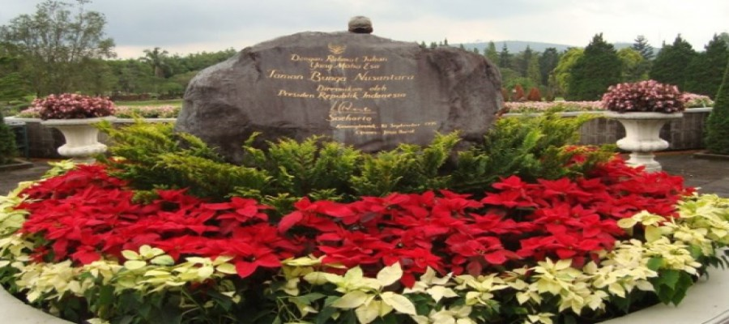

Si Cantik yang Tersembunyi di Selatan Pulau Jawa
Jawa Timur, seberapa jauh Anda mengeksplorasi daerah ini? Sudahkah merasakan pantainya? Belum lengkap kalau ke Jawa Timur tanpa ke pantai. Demikian cara Sudiyanti Masdi memulai tulisan perjalanannya ke Pantai Serang. Kompasianer yang baru bergabung di Kompasiana Oktober 2014 ini berhasil menggaet pembaca terbanyak di rubrik wisata dengan kisah perjalanannya ke wilayah selatan Malang, berjarak kurang lebih 45 KM arah barat daya dari Kota Blitar.
Cerita perjalanannya menelusuri pantai dengan keindahan alam yang menakjubkan diposting memeriahkan lomba blog di Kompasianival 2014. Cerita keindahan alam Indonesia yang dilengkapi dengan foto-foto yang memancing keinginan untuk menjelajah destinasi tersebut.